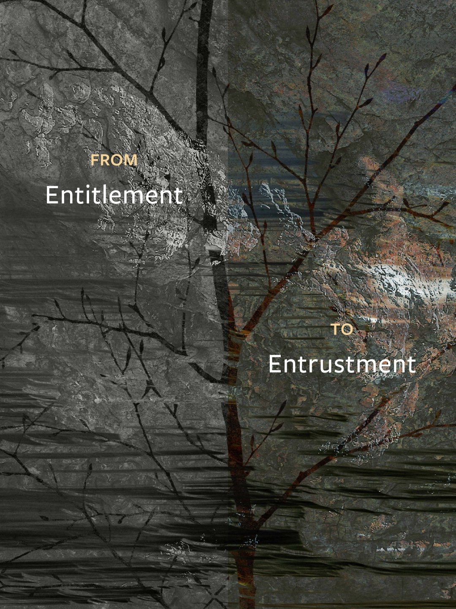
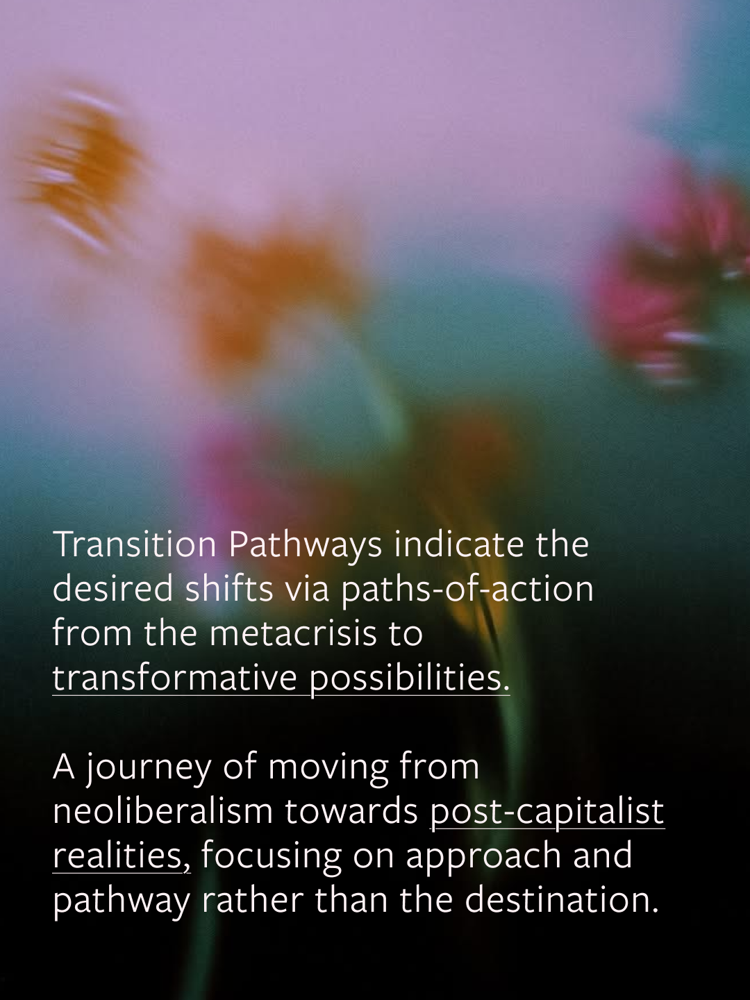
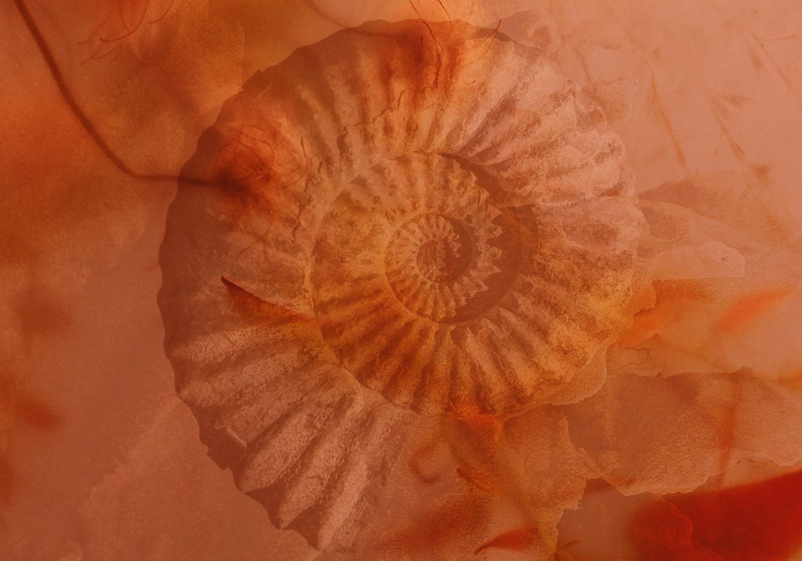
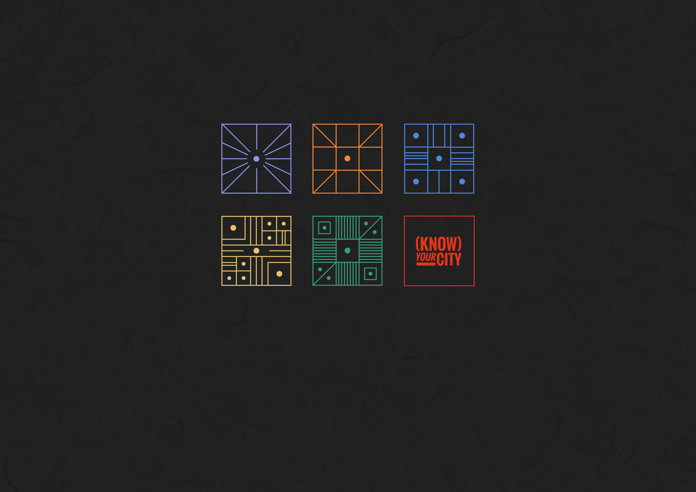
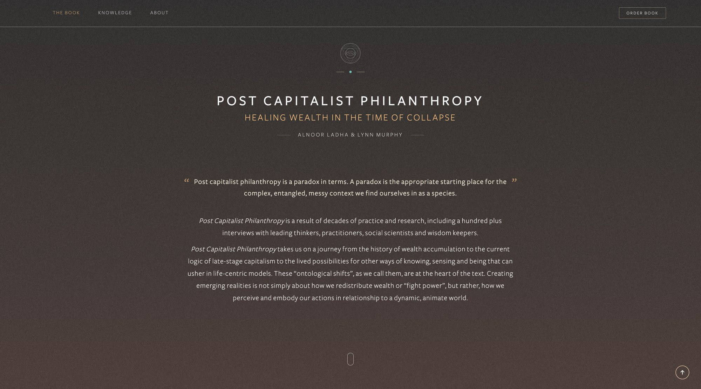
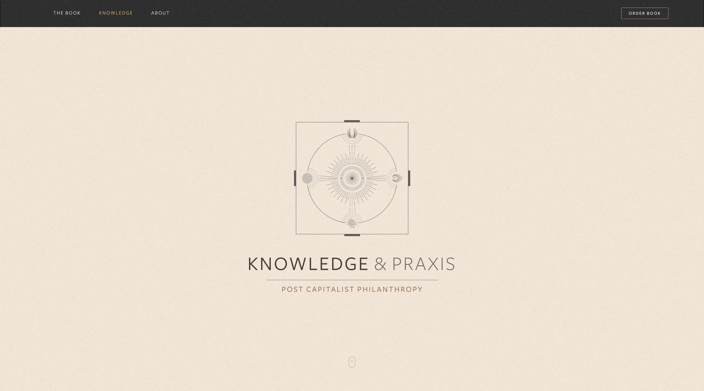
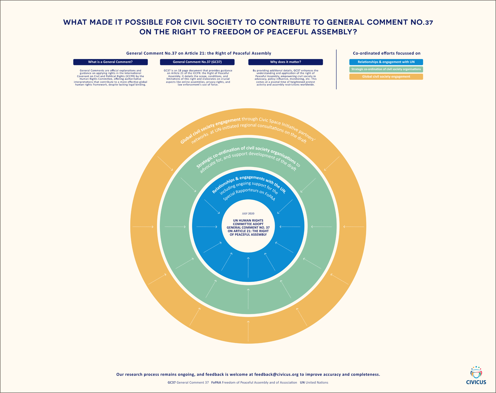

Transition Resource Circle
An assemblage of activists, artists, funders and cosmologists working to alchemize and liberate wealth in service to life-affirming systems – building movements that embody the transition from extractive logics toward regenerative and liberatory ways of being.
Project: Visual exploration for adaptable online communications












SDI
A global network of community-based organisations driving bottom-up change for inclusive cities, connecting the urban poor across Africa, Asia and Latin America.
Project: Visual identity creation & handbook publication design for the ‘Know Your City’ project
Post Capitalist Philanthropy
A critique of modern philanthrocapitalism by Alnoor Ladha and Lynn Murphy.
Project: Information design translating complex topics throughout the book. Visual design & website






Circular Neighbourhoods
The Goethe-Institut’s Sustainable Together residency on Circular Neighbourhoods.
Project: Infographic designs for Mapping community-led neighbourhood resilience in Makers Valley to surface, map and amplify the grassroots initiatives
Grassroots Economics
A non-profit foundation partnering with communities to take charge of their own livelihoods and economic future through local resource coordination and alternative economic systems.
Project: Book design, illustration and visual identity w/ Tamsin Lotz


Culture Hack Labs & Earthrise Studio
Culture Hack Labs is a not-for-profit consultancy supporting movements, organisations and activists to shift the cultural narratives that underpin ecological breakdown, extractivism and inequality.
Earthrise Studio is a social-first, impact-driven media company creating digital content and documentaries that shift cultural narratives on the climate crisis and humanity’s relationship with the natural world.
Project: Publication and communication design for The Carbon Fixation & Climate Philanthropy reports
CIVICUS
CIVICUS is a global alliance of civil society organisations advocating for civic space and citizen action worldwide.
Project: Infographic design for the contributions behind the UN General Comment 37 for Freedom of Peaceful Assembly



Arkology
A purpose-led studio designing technologies, protocols and systems for commons-oriented collaboration - building the cultural and digital infrastructure for a transition toward thriving, post capitalist ecologies.
Website & visual design w/ Simone Naude